資料分析
第十一章：顏色尺度與圖例
實踐大學
2026-06-05
顏色尺度與圖例
概覽
繼位置之後，顏色是資料視覺化中最常使用的美學。ggplot2 提供了一套廣泛的工具，把資料值映射到顏色，本章的組織涵蓋了所有的情境：
- §11.1——基礎的顏色理論與色盲的考量
- §11.2——連續顏色尺度：調色盤、漸層、缺失值、範圍界限／刻度／標籤，以及色條圖例
- §11.3——離散顏色尺度：Brewer、色相、灰階、paletteer 與手動調色盤，外加圖例客製化
- §11.4——分箱顏色尺度：階梯式漸層與階梯圖例指引
- §11.5——日期時間顏色尺度
- §11.6——Alpha（透明度）尺度
- §11.7——圖例位置與版面
本章全程在大多數程式碼範例中使用 scale_fill_*() 函式，但每個概念都同樣適用於 scale_colour_*()（或美式拼法的 scale_color_*()）。
一點顏色理論
一點顏色理論
顏色在物理上是由多種光波長的混合產生的。雖然完整刻畫一個顏色需要整個波長光譜，但人類的視覺系統只擁有三種類型的視錐受器，因此任何被感知的顏色都可以只用三個數字編碼。
熟悉的 RGB 顏色空間把顏色編碼為紅、綠、藍的強度。RGB 的一個關鍵缺點是它並非知覺均勻：兩對被相同數值距離分隔的顏色，看起來可能很相似或很不同，取決於它們落在空間中的何處。
一個更有原則的替代是 HCL 顏色空間，由三個具知覺意義的維度定義：
| 維度 | 範圍 | 知覺意義 |
|---|---|---|
| 色相（Hue） | 0–360° | 顏色的「顏色」（紅、藍、綠……） |
| 彩度（Chroma） | 0–最大 | 顏色純度：0 = 灰，最大 = 鮮明 |
| 明度（Luminance） | 0–1 | 亮度：0 = 黑，1 = 白 |
HCL 各維度的關鍵知覺性質：
- 色相並不被知覺為有序——綠並不「大於」紅。
- 彩度與明度確實被知覺為有序——較飽和或較亮的顏色，與去飽和或較暗的顏色顯得有系統地不同。
這個區別對調色盤設計有直接的後果：
- 循序（Sequential）調色盤（用於有序資料）變化彩度和／或明度，同時保持色相固定。
- 發散（Diverging）調色盤（用於有意義中點的資料）使用從中性中心向兩端發散的兩個色相。
- 定性（Qualitative）調色盤（用於無序類別）變化色相，同時讓彩度與明度大致保持固定。
色盲
由於非典型的色受器組合，相當比例的人口有降低的顏色辨別力。最常見的形式影響區分紅綠的能力。實務指引：
- 避免僅仰賴紅綠對比。
- 用模擬工具（例如 https://www.vischeck.com/）或諸如
dichromat、colorBlindness等 R 套件來驗證你的調色盤。
colorBlindness::displayAllColors() 函式近似一個調色盤在不同形式色盲下的呈現。例如，rainbow() 的顏色就有問題：
相對地，viridis 調色盤的設計，使其在最普遍的色盲形式下可被辨別，並能在灰階中良好重現：
在可能的情況下，用一個冗餘的美學（形狀、線型或大小）來輔助顏色，以協助色盲讀者。
連續顏色尺度
連續顏色尺度
faithful 資料集——記錄老忠實泉噴發之間的等待時間與噴發持續時間——的一個 2D 密度曲面，作為本節全程的範例。erupt 基礎圖隱藏圖例並移除軸擴展，以聚焦於調色盤的外觀：

特定的調色盤
ggplot2 附帶了兩族預先指定的連續顏色調色盤。
Viridis 尺度（scale_fill_viridis_c()）在全色覺與灰階重現下都是知覺均勻的，並對常見的色盲形式安全。有數個命名選項可用：
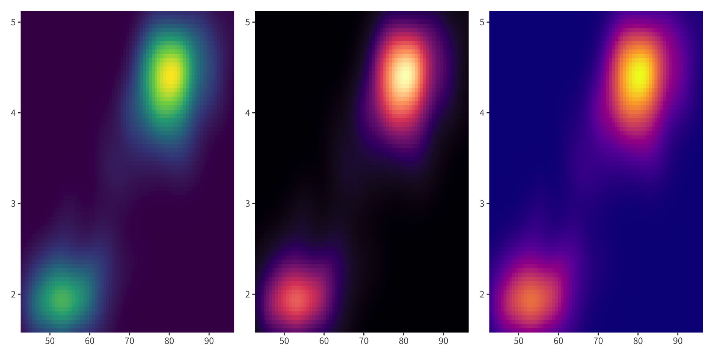
ColorBrewer 尺度也可透過 scale_fill_distiller() 用於連續資料，它在精心挑選的循序或發散 Brewer 調色盤之間內插：
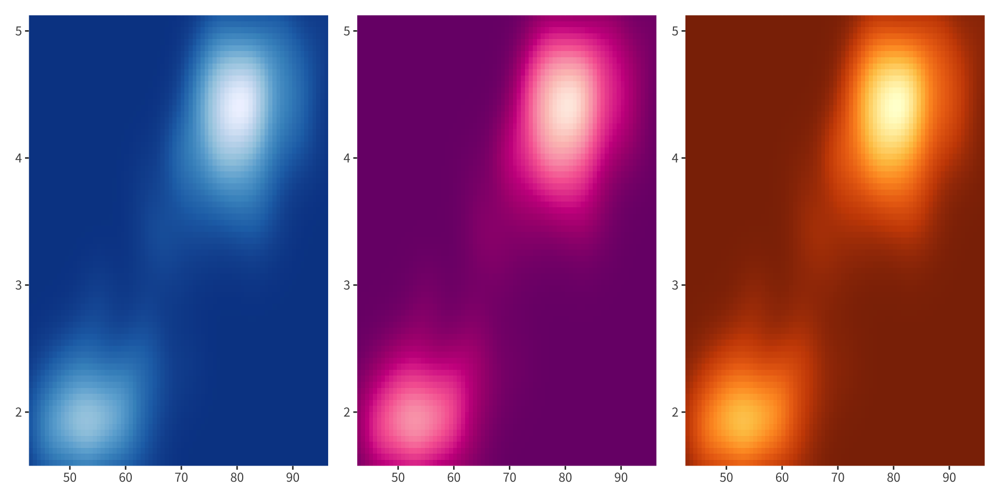
paletteer 套件為來自眾多 R 套件的龐大調色盤集合，提供一個統一的介面。_c 後綴表示連續調色盤：
scico 套件提供額外的、知覺均勻的科學調色盤：
穩健的做法
預設的連續 fill 尺度是 scale_fill_continuous()，它本身又預設為 scale_fill_gradient()。因此這三個呼叫完全相同：
漸層尺度在兩個或更多個參考顏色之間線性內插。三個函式涵蓋不同的使用情境：
| 函式 | 說明 |
|---|---|
scale_fill_gradient() |
雙色漸層（low → high） |
scale_fill_gradient2() |
帶有使用者定義 midpoint 顏色的三色漸層 |
scale_fill_gradientn() |
由一個參考顏色向量構成的 n 色漸層 |
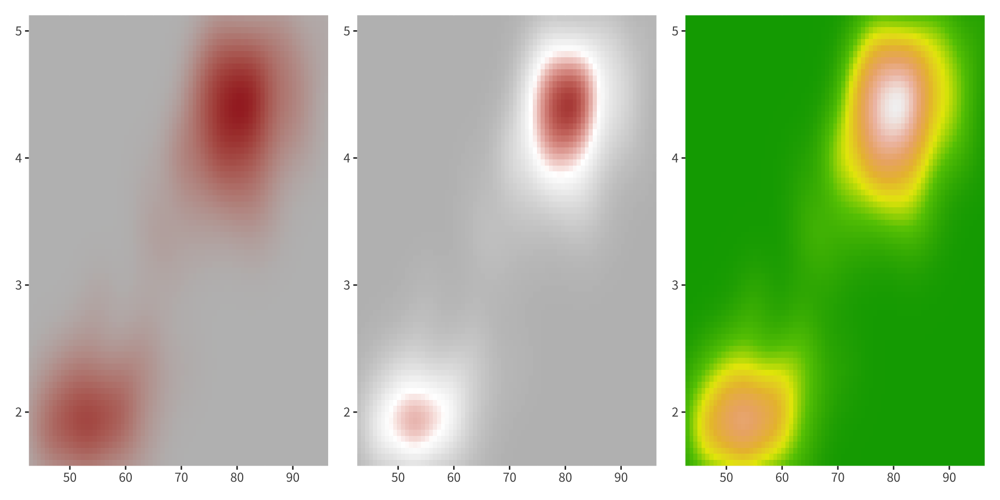
用 Munsell 設計循序調色盤
要做出知覺乾淨的循序尺度，保持色相固定、變化彩度與明度。munsell 套件以類 HCL 的成分提供顏色規格：
Munsell 記號 "5P 2/12" 意指：色相 5P、明值（luminance）2、彩度 12。保持色相與彩度固定、僅變化明值，會產生乾淨的循序漸層。
設計發散與 n 色調色盤
對於發散尺度（有意義中點，例如零的尺度），兩個不同的色相從中性中心向外輻射。colorspace 套件提供有知覺根據的多色相調色盤：
p_div <- erupt +
scale_fill_gradient2(
low = munsell::mnsl("5B 7/8"),
high = munsell::mnsl("5Y 7/8"),
mid = munsell::mnsl("N 7/0"),
midpoint = .02
)
p_heat <- erupt +
scale_fill_gradientn(colours = colorspace::heat_hcl(7))
p_div2 <- erupt +
scale_fill_gradientn(colours = colorspace::diverge_hcl(7))
p_div | p_heat | p_div2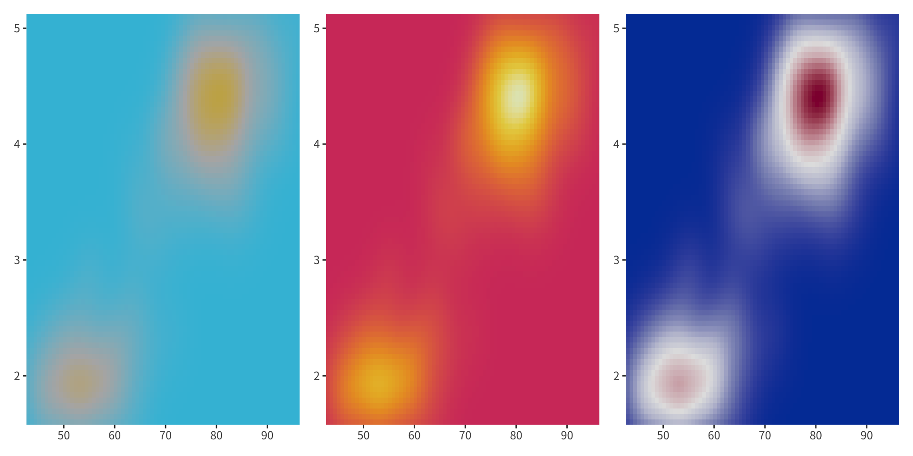
缺失值
所有連續顏色尺度都接受一個 na.value 引數，它決定為 NA 觀測值、以及落在所宣告尺度界限之外的值所呈現的顏色。預設是灰色；把它設為 NA 會把缺失值呈現為透明，或提供任何有效的顏色字串：
df <- data.frame(x = 1, y = 1:5, z = c(1, 3, 2, NA, 5))
base_na <- ggplot(df, aes(x, y)) +
geom_tile(aes(fill = z), linewidth = 5) +
labs(x = NULL, y = NULL) +
scale_x_continuous(labels = NULL)
p_def <- base_na
p_inv <- base_na + scale_fill_gradient(na.value = NA)
p_yel <- base_na + scale_fill_gradient(na.value = "yellow")
p_def | p_inv | p_yel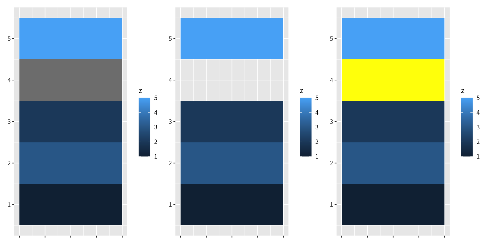
範圍界限、刻度與標籤
顏色尺度支援與位置尺度（§10.1）相同的 limits、breaks 與 labels 引數。延伸 §10.1.4 的玩具資料集範例：
toy <- data.frame(
const = 1, up = 1:4, txt = letters[1:4],
big = (1:4) * 1000, log = c(2, 5, 10, 2000)
)
base_c <- ggplot(toy, aes(up, up, fill = big)) +
geom_tile() + labs(x = NULL, y = NULL)
p_def <- base_c
p_lim <- base_c + scale_fill_continuous(limits = c(0, 10000))
p_brk <- base_c + scale_fill_continuous(breaks = c(1000, 2000, 4000))
p_lbl <- base_c + scale_fill_continuous(labels = scales::label_dollar())
(p_def | p_lim) / (p_brk | p_lbl)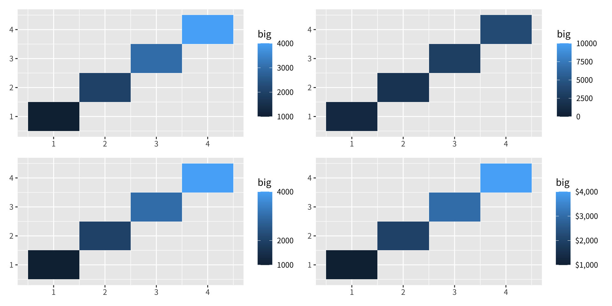
設定 breaks = NULL 會完全移除圖例的鍵與標籤。
圖例
對於連續顏色尺度，預設的圖例採取色條（colour bar）的形式——一條平滑的漸層帶。它的外觀由 guide_colourbar() 控制，可透過 guides() 或直接透過尺度函式的 guide 引數傳入。
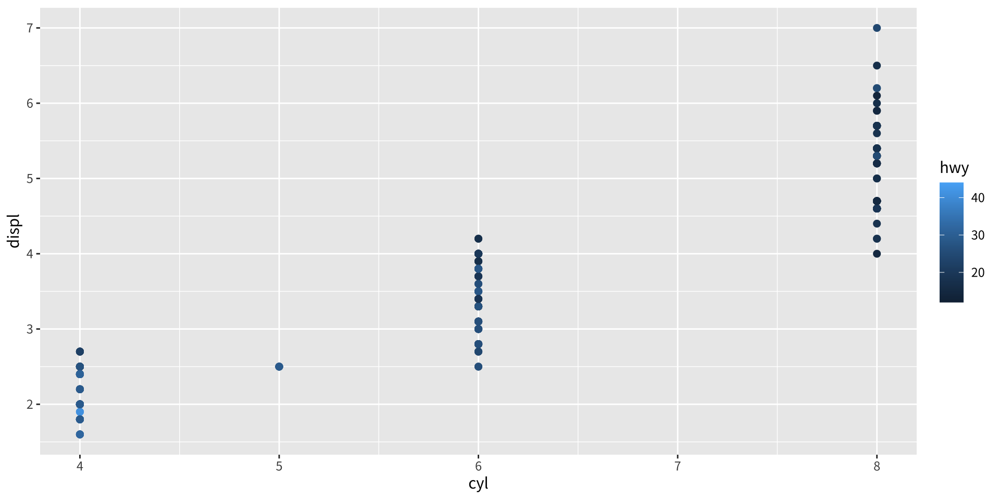
guide_colourbar() 的關鍵引數：
| 引數 | 效果 |
|---|---|
reverse |
翻轉色條（最低值在頂端） |
barwidth / barheight |
用 grid 單位調整色條大小 |
direction |
"horizontal" 或 "vertical" |
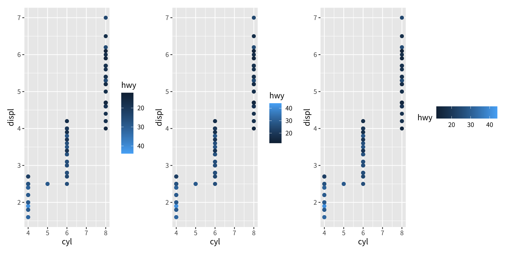
guides() 函式與傳給尺度函式的 guide 引數完全等價：
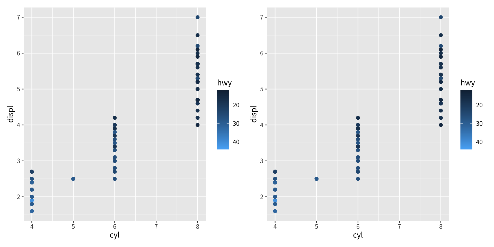
離散顏色尺度
離散顏色尺度
每當一個類別變數被映射到顏色時，便使用離散的 colour 與 fill 尺度。一張把位置與填色都編碼到同一變數的長條圖，作為本節的範例：
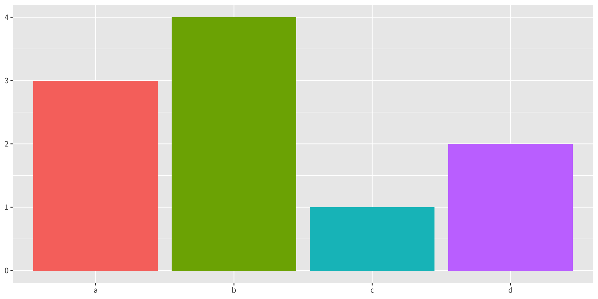
預設的尺度是 scale_fill_discrete()，它委派給 scale_fill_hue()。這三個呼叫產生相同的輸出。
Brewer 尺度
scale_fill_brewer() 存取來自 https://colorbrewer2.org/ 的 ColorBrewer 調色盤——一個為地圖設計、但在其他脈絡中也廣泛適用的手工製作調色盤集合。完整的調色盤目錄可用以下方式檢視：
有三個調色盤族可用：
- 循序——用於有序的離散資料（也可透過
scale_fill_distiller()用於連續資料） - 發散——用於有意義中點的資料
- 定性——用於無序類別；
"Set1"、"Dark2"適合點；"Set2"、"Pastel1"、"Pastel2"、"Accent"適合填色區域
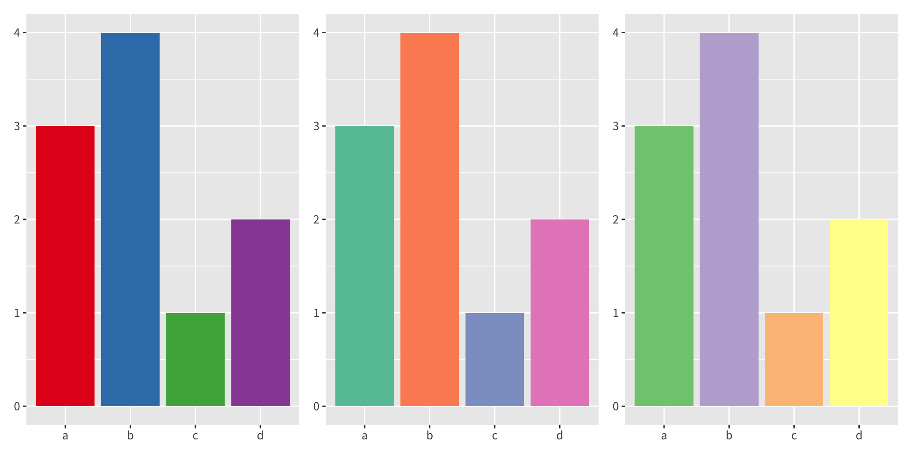
調色盤的選擇應與幾何相配。散佈圖使用小標記，因此鮮明的顏色能改善可辨別性：
df_pt <- data.frame(
x = 1:3 + runif(30), y = runif(30), z = c("a", "b", "c")
)
point <- ggplot(df_pt, aes(x, y)) +
geom_point(aes(colour = z)) +
theme(legend.position = "none") + labs(x = NULL, y = NULL)
point + scale_colour_brewer(palette = "Set1") |
point + scale_colour_brewer(palette = "Set2") |
point + scale_colour_brewer(palette = "Pastel1")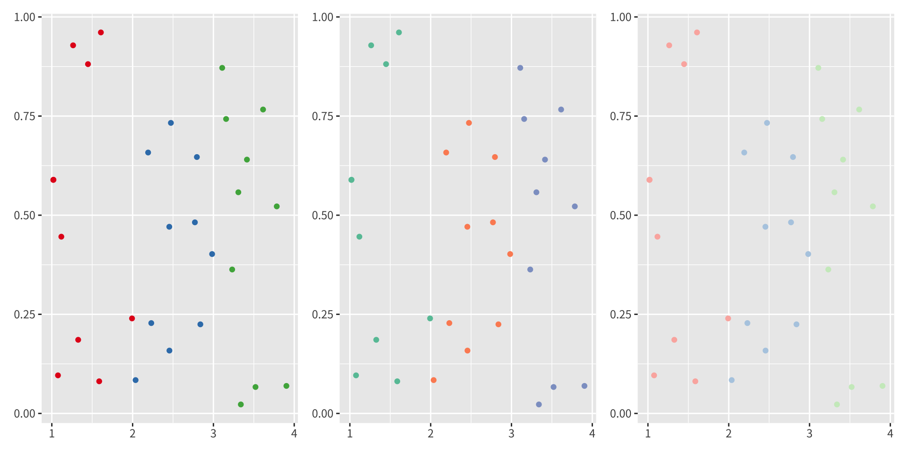
長條圖覆蓋大片顏色區域，因此細緻、柔和的調色盤往往看起來更乾淨：
df_area <- data.frame(x = 1:3, y = 3:1, z = c("a", "b", "c"))
area <- ggplot(df_area, aes(x, y)) +
geom_bar(aes(fill = z), stat = "identity") +
theme(legend.position = "none") + labs(x = NULL, y = NULL)
area + scale_fill_brewer(palette = "Set1") |
area + scale_fill_brewer(palette = "Set2") |
area + scale_fill_brewer(palette = "Pastel1")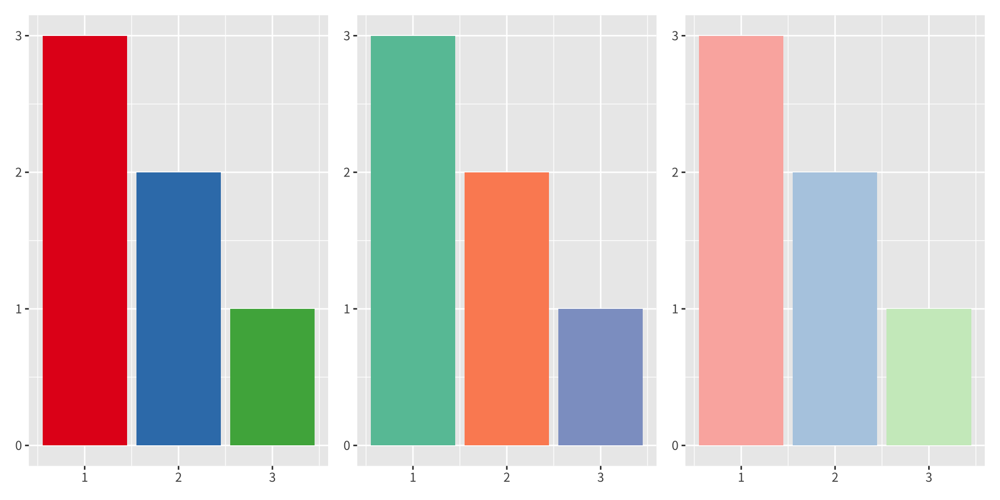
色相與灰階尺度
預設的 scale_fill_hue() 沿 HCL 色相環以相等的角度間隔分配顏色，並保持彩度與明度固定。這對至多約八個類別都能可靠運作。三個引數允許客製化：
h——色相範圍（一個長度為 2 的數值向量，角度 0–360）c——彩度層級（顏色飽和度）l——明度層級（亮度）
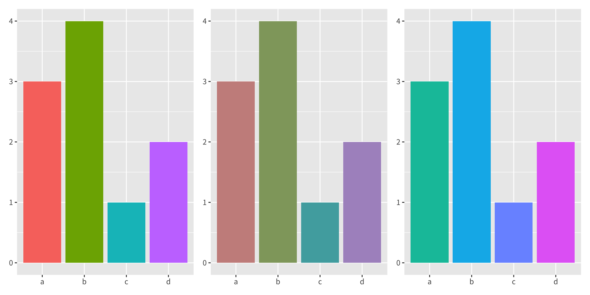
scale_fill_hue() 有兩個值得注意的限制：
- 由於所有顏色共享相同的明度與彩度，它們在以黑白印刷時會塌縮成相同的灰。
- 這個調色盤對色盲不安全。
當需要黑白重現時，使用 scale_fill_grey()，它把類別映射到從淺到深的一系列灰調：
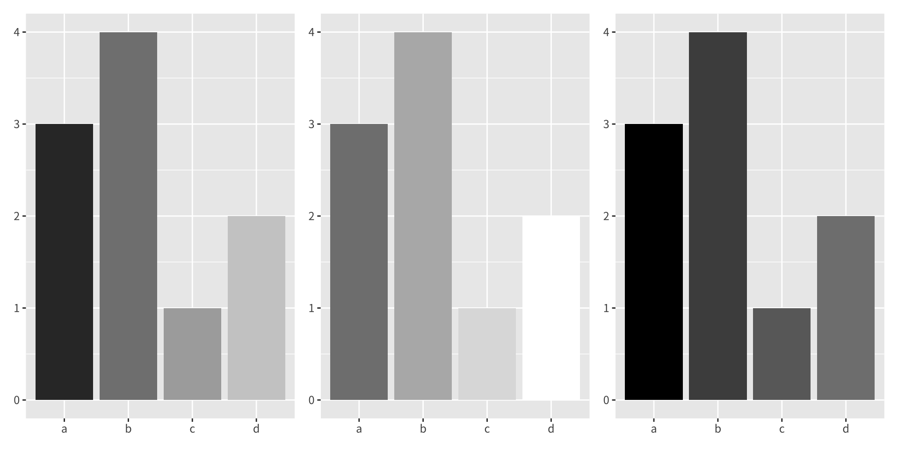
start 與 end 引數（範圍 0–1）定義灰的範圍，其中 0 是黑、1 是白。
Paletteer 尺度
paletteer 套件把數十個 R 套件的調色盤匯聚到單一個一致的介面中。對於離散尺度，使用 scale_fill_paletteer_d()（_d 後綴表示離散）：
調色盤識別碼遵循 "package::palette_name" 慣例。完整目錄可在 https://pmassicotte.github.io/paletteer_gallery/ 搜尋。
手動尺度
當沒有任何預建的調色盤滿足你的需求時——或當特定的顏色選擇帶有語意意義時——使用 scale_fill_manual() 手動指派顏色。
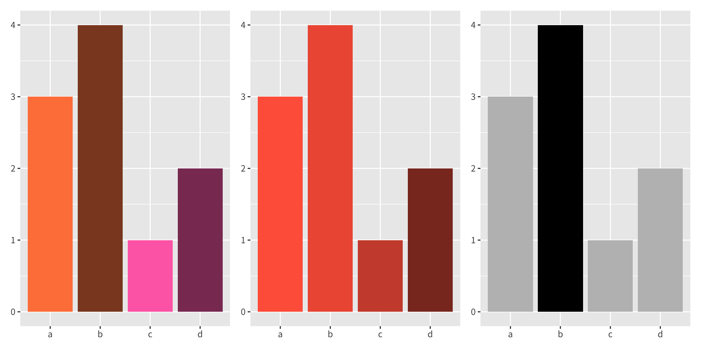
具名向量讓你能把顏色指派的順序與因子水準的順序解耦。只有名稱與 "b" 相符的類別得到黑色：
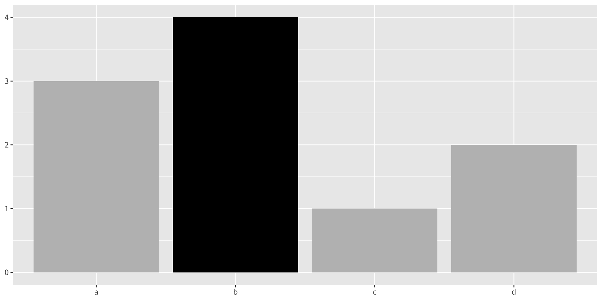
當需要凸顯特定群組，或當顏色必須在顯示不同資料子集的各圖之間保持穩定時，具名向量特別有用。
範圍界限、刻度與標籤
當相同的類別變數被繪製在多個面板或圖上時，顏色被一致地映射至關重要。lims() 輔助函式接受離散美學界限，形式為一個按顯示順序指定所有可允許值的字元向量：
library(dplyr)
mpg_99 <- mpg |> filter(year == 1999)
mpg_08 <- mpg |> filter(year == 2008)
base_99c <- ggplot(mpg_99, aes(displ, hwy, colour = fl)) + geom_point()
base_08c <- ggplot(mpg_08, aes(displ, hwy, colour = fl)) + geom_point()
base_99c + lims(colour = c("c", "d", "e", "p", "r")) |
base_08c + lims(colour = c("c", "d", "e", "p", "r"))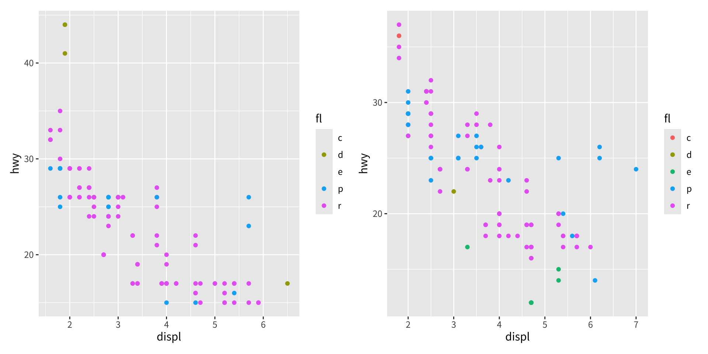
lims() 可在單一個呼叫中同步多個美學：
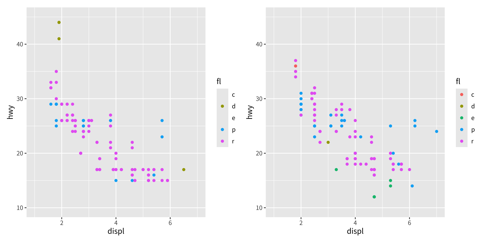
當需要更精細的控制時——例如只為某一年資料中出現的燃料類型顯示標籤——直接使用 scale_colour_discrete()：
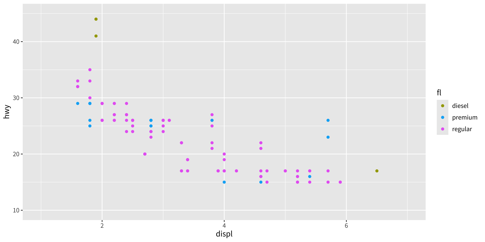
limits 引數控制哪些值得到顏色映射；breaks 控制哪些值出現在圖例中；labels 為每個刻度自訂顯示文字。
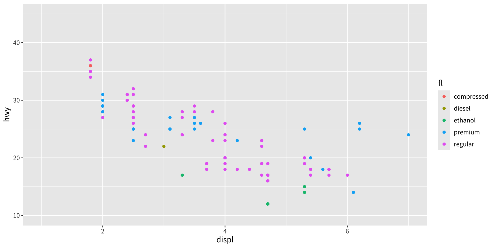
圖例
離散顏色圖例用 guide_legend() 客製化。最有用的引數是：
| 引數 | 效果 |
|---|---|
nrow / ncol |
設定圖例表的維度 |
byrow |
依列（TRUE）或依欄（FALSE，預設）填入圖例 |
reverse |
反轉鍵的順序 |
override.aes |
只在圖例內覆寫 geom 的美學 |
keywidth / keyheight |
調整圖例鍵大小（grid 單位） |
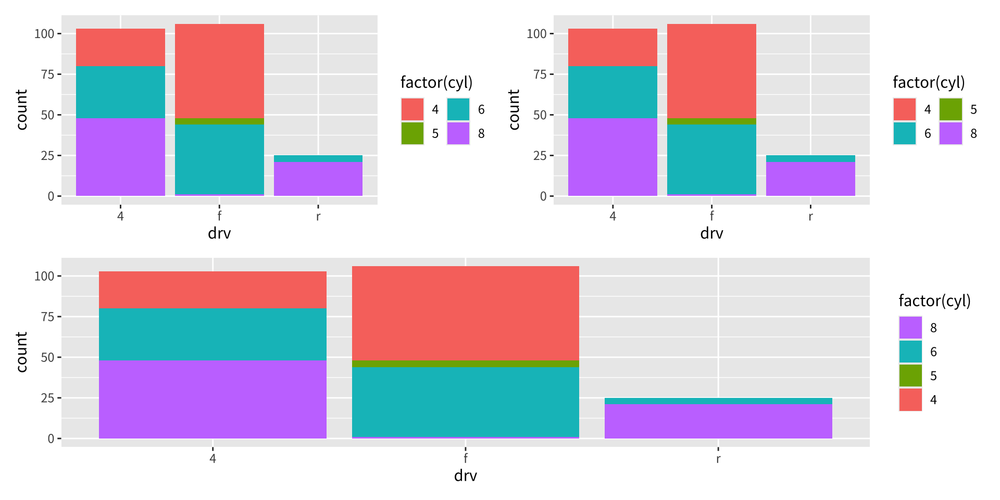
當圖使用透明度或讓圖例鍵難以看清的小尺寸時，override.aes 特別重要：
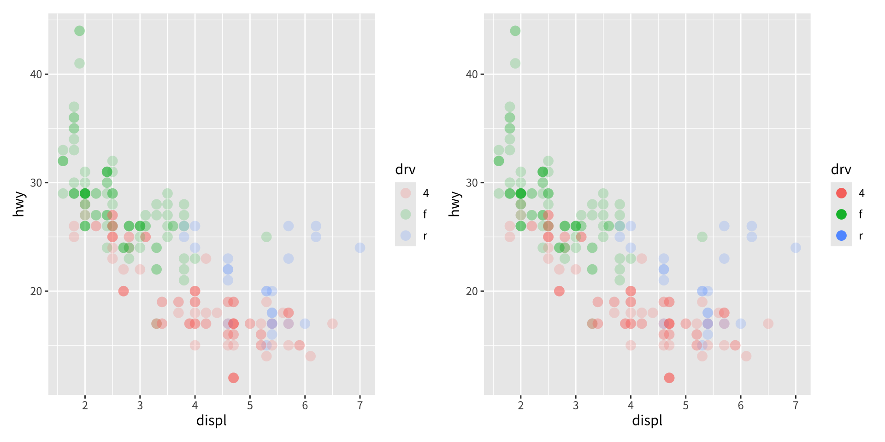
右圖只在圖例鍵中設定 alpha = 1，使它們完全不透明且清楚可讀，即使圖中的點是半透明的。
分箱顏色尺度
分箱顏色尺度
分箱顏色尺度把一個連續變數離散成固定數目的顏色階梯。這可改善對漸層的知覺，因為人類視覺系統偵測明顯的顏色邊界（邊緣）比偵測平滑漸層更容易。
預設的分箱尺度是 scale_fill_binned()，它委派給 scale_fill_steps()。n.breaks 引數控制顏色階梯的數目：
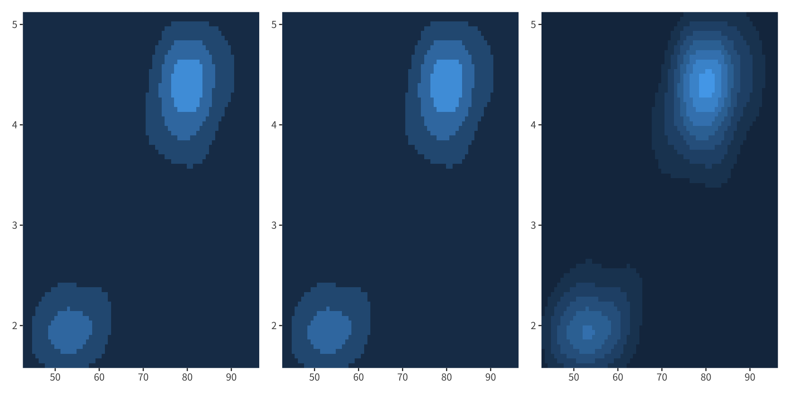
scale_fill_steps() 映照 scale_fill_gradient() 的 API。雙色、三色與 n 色變體都可用：
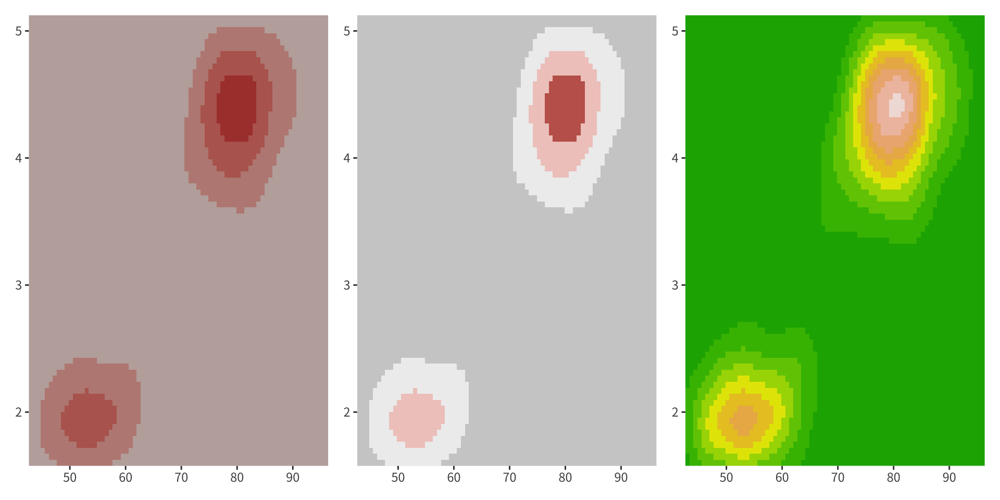
把產生調色盤的函式直接傳給 scale_fill_stepsn() 的 colours 引數，便能把 viridis 調色盤套用到分箱尺度：
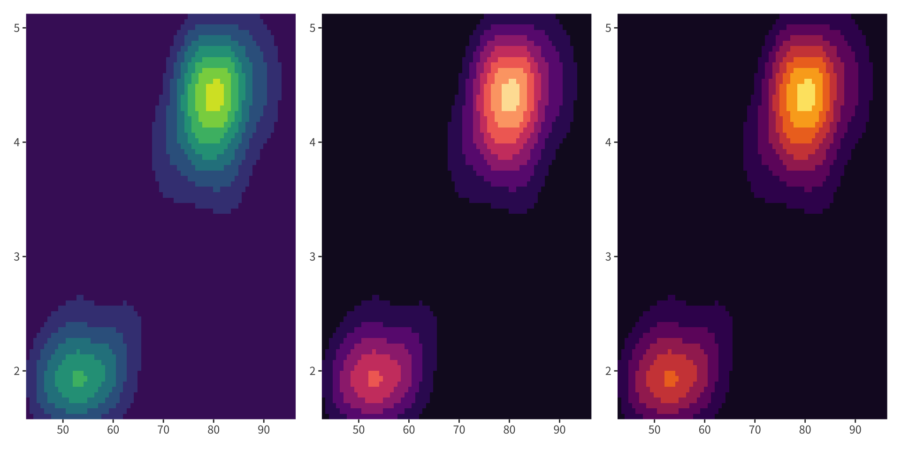
scale_fill_fermenter() 是 Brewer 家族的分箱對應：
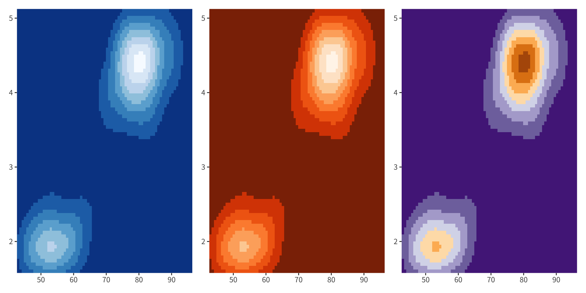
注意： 與 scale_fill_distiller() 不同，scale_fill_fermenter() 不在 Brewer 顏色之間內插。如果 n.breaks 超過調色盤中的顏色數，會發出警告，且某些階梯會被抑制。
範圍界限、刻度與標籤
為分箱尺度設定界限、刻度與標籤，遵循與連續尺度（§11.2.4）相同的慣例。重要的差別是 breaks 引數定義的是箱的邊緣，而不只是刻度標記的位置。因此，刻度的數目等於箱的數目加一。
如 §10.1 所述，limits 與 breaks 引數除了固定向量外也都接受函式。
圖例
分箱顏色尺度預設使用顏色階梯圖例，呈現為一系列離散的顏色塊。它透過 guide_coloursteps() 客製化，後者以分箱專屬的選項擴展了 guide_colourbar() 的引數：
| 引數 | 效果 |
|---|---|
show.limits |
在色條的兩端顯示值 |
ticks |
顯示／隱藏標籤旁的刻度標記 |
even.steps |
箱是以相等寬度顯示（TRUE），還是與其資料頻率成比例（FALSE） |
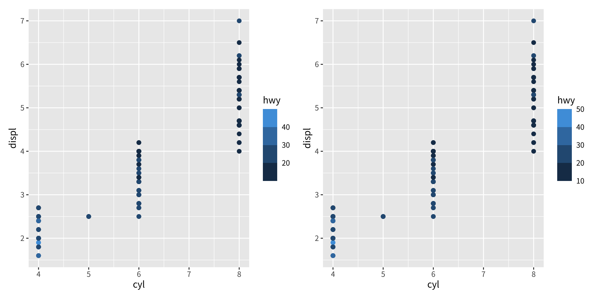
日期時間與 Alpha 尺度
日期時間顏色尺度
當一個日期或日期時間變數被映射到 colour 或 fill 時，ggplot2 自動選擇 scale_colour_date() 或 scale_colour_datetime()。這些尺度映照日期時間位置尺度（§10.2）的行為，並公開 date_breaks 與 date_labels 引數以利對人友善的控制：
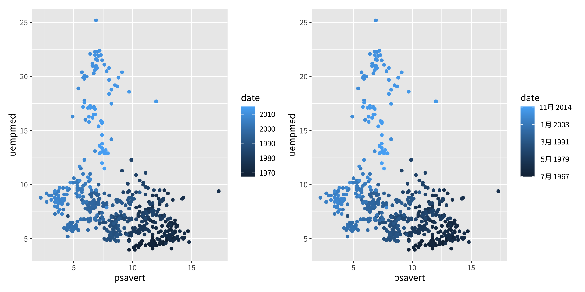
date_labels 引數接受 strptime 風格的格式字串（完整表格見 §10.2.3）。
Alpha 尺度
alpha 美學控制所呈現元素的透明度，其中 0 是完全透明、1 是完全不透明。把 alpha 映射到一個資料變數會產生視覺上的降權效果，把視線引向高 alpha（較不透明）的觀測值。
scale_alpha() 是 scale_alpha_continuous() 的別名，在最常見的使用情境中省下幾個按鍵：
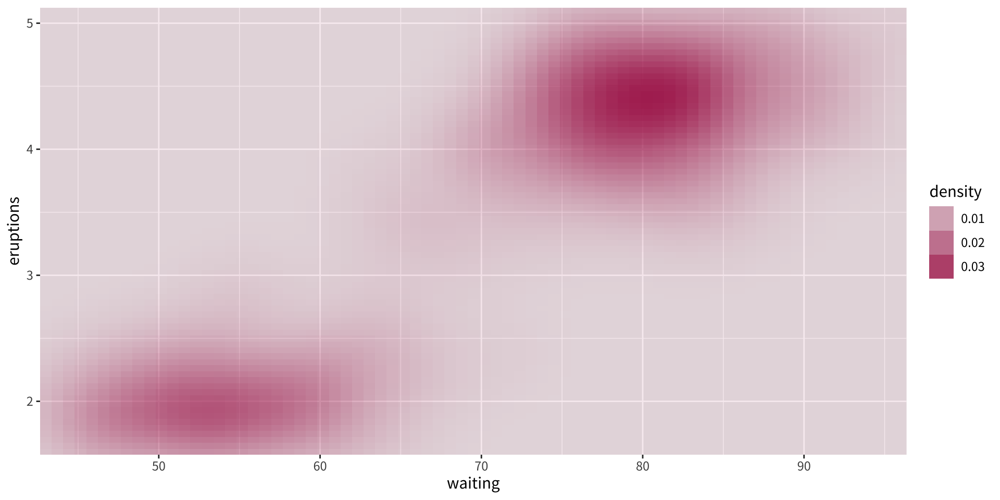
高密度的區域以深栗色完全不透明地呈現，而低密度區域則朝透明淡去。Alpha 尺度在與一個視覺上有辨識度的填色搭配時最為有效。
圖例位置
圖例位置
圖例的整體放置透過主題系統的 legend.position 設定來控制。可接受的值是字串 "right"（預設）、"left"、"top"、"bottom" 與 "none"（抑制所有圖例）：
toy <- data.frame(
const = 1, up = 1:4, txt = letters[1:4],
big = (1:4) * 1000, log = c(2, 5, 10, 2000)
)
base_lg <- ggplot(toy, aes(up, up)) +
geom_point(aes(colour = txt), size = 3) + xlab(NULL) + ylab(NULL)
p_l <- base_lg + theme(legend.position = "left")
p_r <- base_lg + theme(legend.position = "right")
p_b <- base_lg + theme(legend.position = "bottom")
p_n <- base_lg + theme(legend.position = "none")
(p_l | p_r) / (p_b | p_n)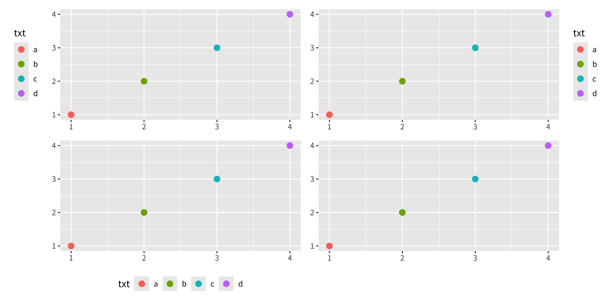
當有多個圖例時，另外三個主題設定對圖例版面提供更精細的控制：
| 設定 | 值 | 效果 |
|---|---|---|
legend.direction |
"horizontal" / "vertical" |
每個圖例內鍵的排列方向 |
legend.box |
"horizontal" / "vertical" |
多個圖例彼此堆疊的方式 |
legend.box.just |
"top"、"bottom"、"left"、"right" |
每個圖例在整體圖例框內的對齊 |
把圖例放在面板內
當圖有大量空白時，把圖例定位在面板區域之內可以更為精簡。把 legend.position 設為一個長度為 2 的數值向量，其中 c(0, 0) 是左下角、c(1, 1) 是右上角。legend.justification 設定控制圖例框的哪個角被錨定到指定的位置：
base_lg2 <- ggplot(toy, aes(up, up)) +
geom_point(aes(colour = txt), size = 3)
p_tl <- base_lg2 +
theme(legend.position = c(0, 1), legend.justification = c(0, 1))
p_cc <- base_lg2 +
theme(legend.position = c(0.5, 0.5), legend.justification = c(0.5, 0.5))
p_br <- base_lg2 +
theme(legend.position = c(1, 0), legend.justification = c(1, 0))
p_tl | p_cc | p_br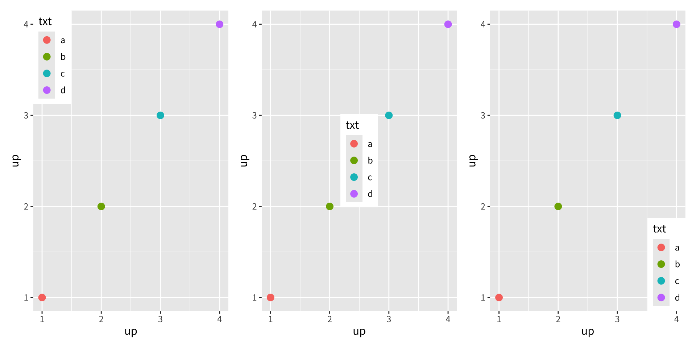
若有需要，用 legend.margin = unit(0, "mm") 移除圖例框周圍的填補。
練習
用
faithfuld，把三個不同的 viridis 調色盤選項（"viridis"、"magma"、"inferno"）套用到erupt基礎圖，並比較各自傳達密度曲面的效果。建立一張以
colour = drv的mpg散佈圖。套用 (a)scale_colour_brewer(palette = "Set1")、(b)scale_colour_grey()，以及 (c) 你自選的手動調色盤。對色盲讀者而言哪一個最好用？為什麼？用
faithfuld資料集示範scale_fill_gradient()、scale_fill_gradient2()與scale_fill_gradientn()之間的差異。選擇適合科學出版品的顏色端點。
用
ggplot(mpg, aes(displ, hwy, colour = cty)) + geom_point()，比較scale_colour_continuous()與scale_colour_binned(n.breaks = 6)。在什麼條件下，分箱版本能給出更清楚的資料圖像？對於燃料類型（
fl）的離散顏色範例，說明為什麼僅設定limits不足以確保 1999 子集有乾淨的圖例，並示範如何結合limits、breaks與labels引數來解決這個問題。把
ggplot(mpg, aes(displ, hwy, colour = class)) + geom_point()的圖例放在繪圖面板內的右上角。用guide_legend(ncol = 2)把鍵排成兩欄。
致謝
版權聲明。 本教材改編自 ggplot2: Elegant Graphics for Data Analysis (3e)。所有權利均由原作者與出版者保留。
僅供非商業用途。 本教材嚴格限定用於教育目的，不得用於商業獲利。
適當標註出處。 任何對本教材的重製、散布或使用，都必須適當標註原始出處。
參考文獻

ggplot2: Elegant Graphics for Data Analysis